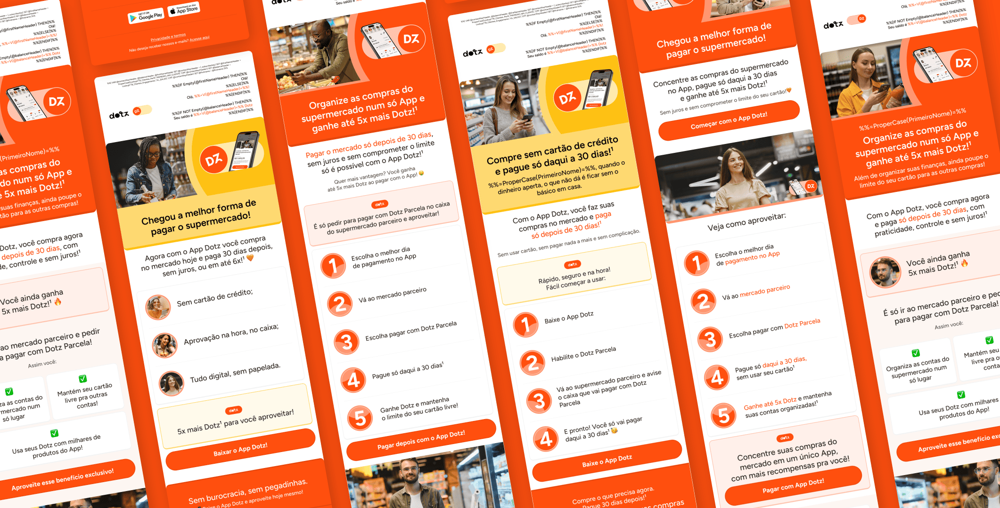
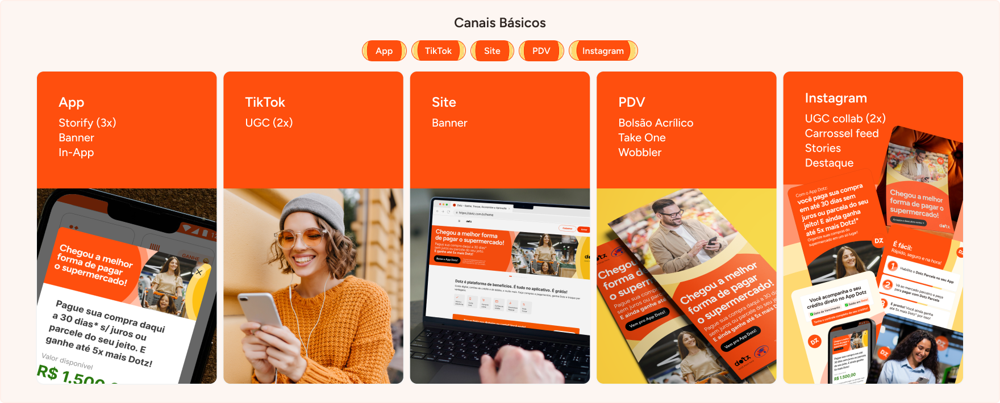
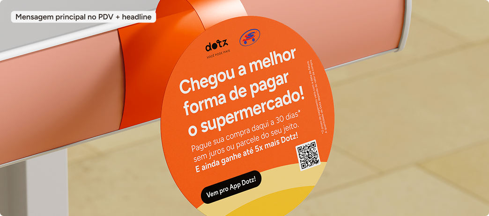
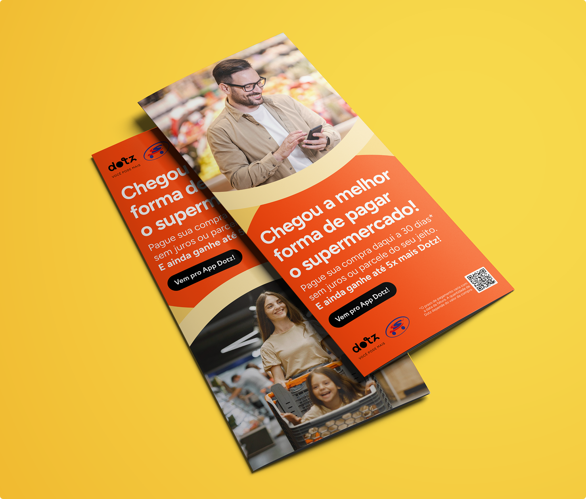
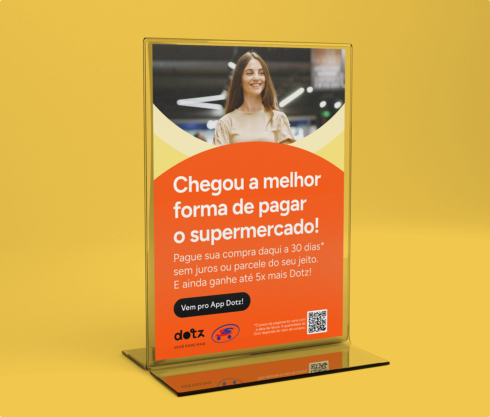
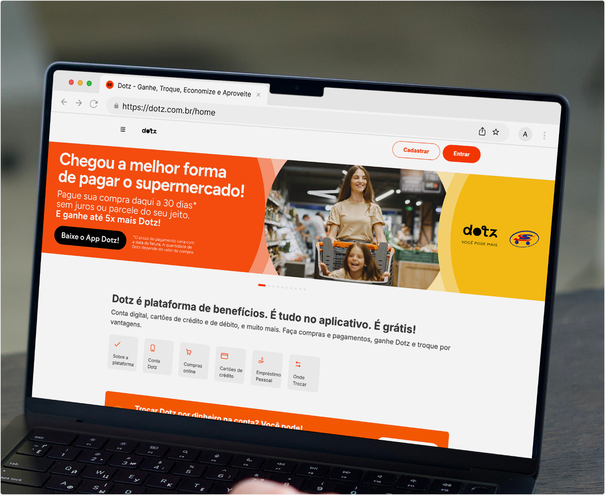

Dotz · 2026

Régua de lançamento — fluxos por perfil e canal com variações de mensagem e timing
A mesma mensagem para perfis tão distintos não funcionaria para nenhum dos dois. A segmentação foi o que permitiu comunicação com precisão onde era possível, e coesão onde era necessário.
O lançamento do Crédito Dotz foi pensado como um ecossistema — não um conjunto de peças isoladas. Cada canal tinha um papel específico na jornada do consumidor, todos convergindo para um único objetivo: usar o App Dotz.

Canais básicos de lançamento — App, TikTok, Site, PDV e Instagram
No varejo físico, o enxoval cercava o consumidor do corredor ao caixa. No digital, a comunicação seguia uma narrativa sequencial — do banner no site ao carrossel de feed — sempre direcionando para o App. No CRM, régua segmentada por perfil e comportamento garantia a mensagem certa no momento certo.

Wobbler — material de gôndola para alta visibilidade no corredor

Take One — material no ponto de pagamento

Bolsão acrílico — display de caixa no momento de decisão

Banner no site dotz.com.br — ponto de entrada digital
Stories Instagram — narrativa nas redes sociais